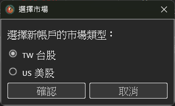
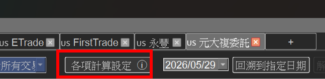
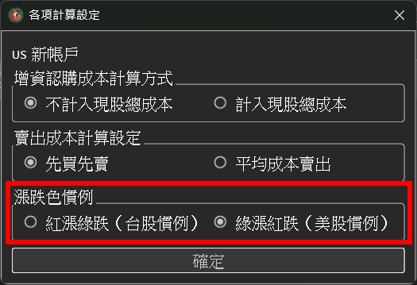
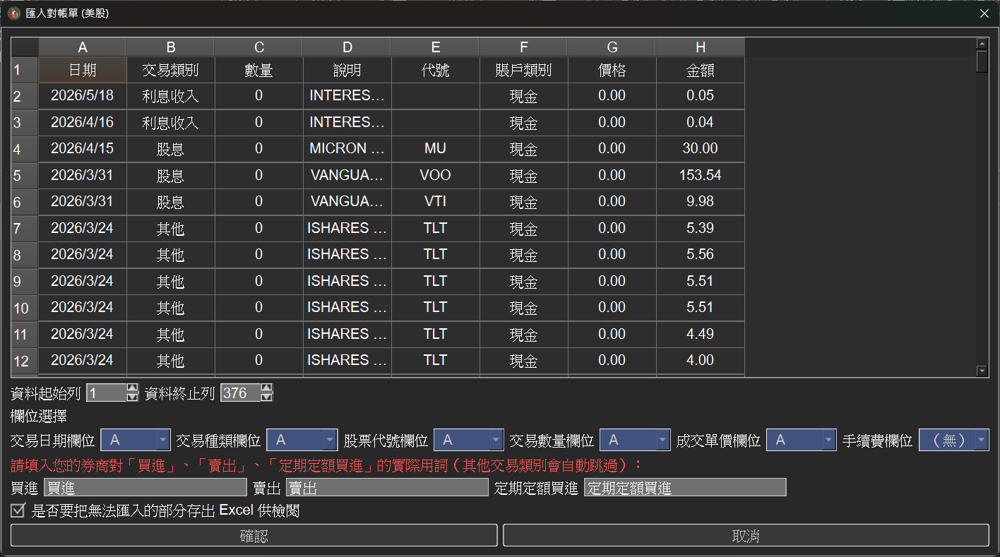
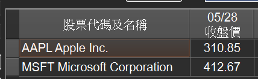
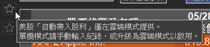

v3.2.0 版本更新說明
v3.2.0 是 StockKeeper 的一個重要里程碑 ── 從原本只支援台股，正式擴充到 台股 + 美股雙市場記帳。 兩種市場各自獨立帳戶、互不干擾， 並針對美股的交易慣例做了完整的調整。
1、新增美股帳戶，台美各自獨立
新增帳戶時可選擇「台股 / 美股」市場， 帳戶分頁會以前綴區分(🇹🇼 TW / 🇺🇸 US)，一眼分辨。 市場選定後即不可切換，避免資料混淆。

美股帳戶預設採用美股慣例：綠漲紅跌； 台股則維持紅漲綠跌， 兩者都可以依帳戶獨立自訂漲跌顏色， 符合你習慣的看盤色系。


2、自動隱藏美股不適用的欄位與功能
美股沒有的概念會自動隱藏，介面更乾淨、不會誤解，包含:
● 交易稅、 二代健保補充保費、 股票股利、 減資、 損益平衡價 等欄位 / 功能。
● 手續費可不填 ── 多數美股券商為 $0 佣金。
3、美股一樣支援券商對帳單匯入(Excel / CSV)
美股帳戶同樣可以匯入券商對帳單，自由對應欄位 (日期 / 種類 / 代號 / 數量 / 單價 / 手續費)。
支援的交易種類:買進、 賣出、 定期定額買進; 其他類型(股息 / 利息 / 提款等)會自動略過。

4、美股股價自動更新
程式啟動後會自動取得全市場最新收盤價， 涵蓋 NYSE / NASDAQ / AMEX 及 ETF， 合計逾 1 萬檔。
每個交易日美股收盤後自動更新， 庫存總表隨時顯示最新市值與損益，不必自己手動查價。

5、美股的分割與股利自動帶入(雲端模式)
在雲端模式下，美股的分割與 股利會自動帶入，與台股一樣省心。
由於美股相關資料量過於龐大、無法即時讓使用者自行爬蟲， 單機模式不支援美股的自動帶入， 這部分需透過雲端模式取得。

修正與優化
下載最新版本